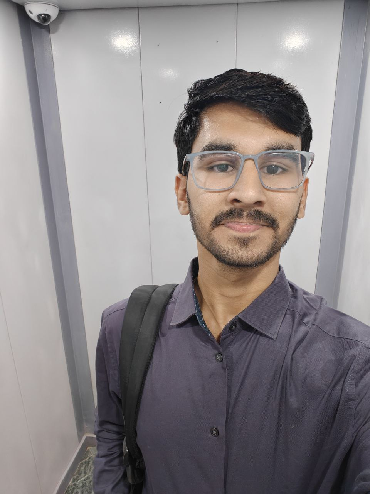

Birthday: 5 March 2005
📞 +91 8719884075
📧 bjain5480@gmail.com


Bhavya Jain
Aspiring Entrepreneur | Storyteller | Business & Tech Enthusiast
Location: Kunkuri , ChhattisgarhBirthday: 5 March 2005
📞 +91 8719884075
📧 bjain5480@gmail.com
About Me
Curious about the real Bhavya?
From sports to mathematics to heartfelt stories to business,
discover my journey in business, sports, and writing amidst engineering.
( see my story )
Education
-
 IIM Bangalore — BBA (Digital Business & Entrepreneurship), 2024–2027
IIM Bangalore — BBA (Digital Business & Entrepreneurship), 2024–2027
- Institute of Venture Building, Chennai — Finance & Marketing, 2025–2028
- VIT Vellore — B.Tech CSE, 2024 (Dropped out)
- 12th Grade (PCM with CS) — 78%
- 10th Grade — 87.4%
- JEE 87%ile | COMEDK 8000 rank | MHTCET 7000 rank
Work Experience
-
Retail Business Management (Family Business)
- Managed daily operations of Kumar Stores, Kunkuri.
- Oversaw inventory and streamlined supply chain logistics.
- Enhanced customer service and vendor communication.
- Implemented local marketing strategies to increase footfall.
- Gained hands-on experience in finance, sales, and people management.
Skills
- Content writing
- Exceptional communication and interpersonal skills
- Marketing and customer management
- Mathematical and analytical thinking
Hobbies
- Storytelling
- Reading books
Sporting Achievements
- State-level badminton player
- National-level cricket player
Certifications
- Certified Writer from Terribly Tiny Tales
-
Anthology Contributor: Humans of Faith